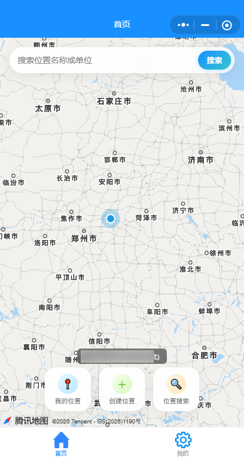
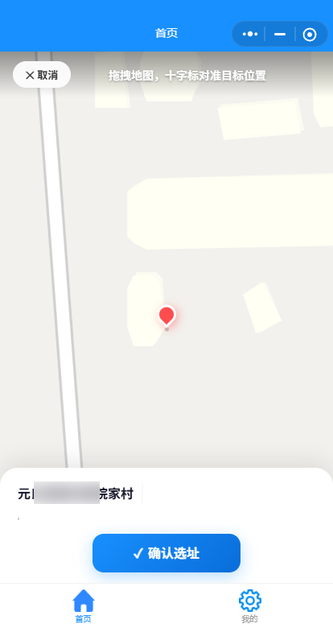
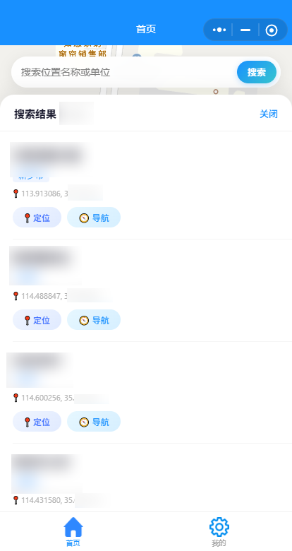
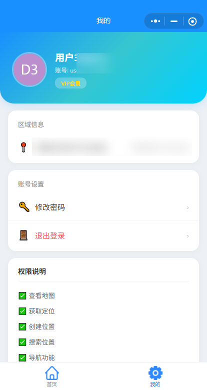
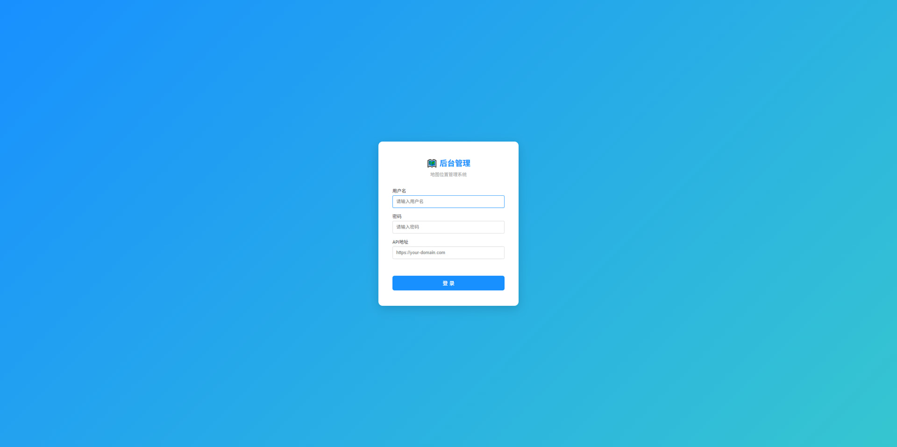
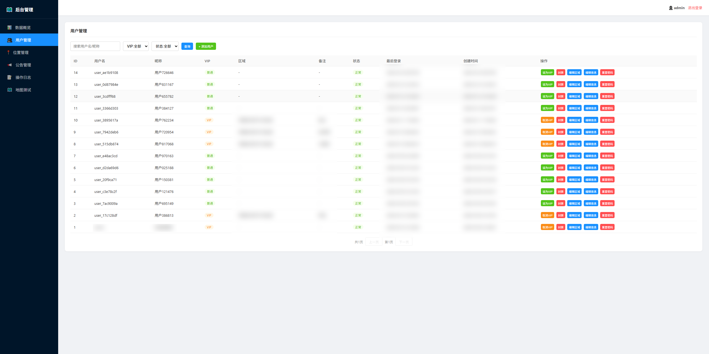
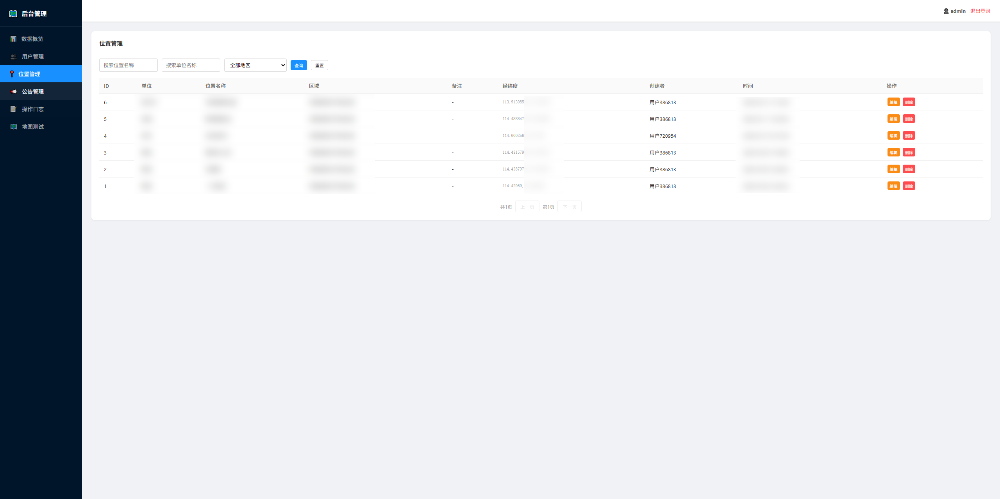
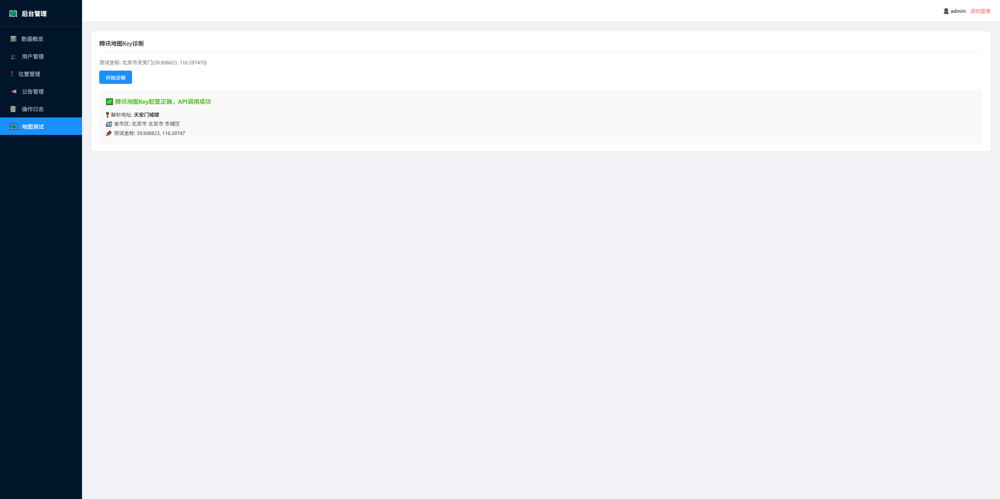

一、项目概述与创意来源
运维点位标记地图小程序是一款面向电力、水务、通信等行业一线外勤人员的微信小程序，解决外勤运维中设备点位记忆难、查找慢、导航不便的核心痛点。
创意名称
运维点位标记地图小程序
产品形态
基于腾讯地图 SDK 的微信小程序 + PHP 后端管理后台
核心痛点
外勤人员管辖设备点位数量庞大，纸质记录易丢失，无门牌号点位难以精准定位，抢修效率低。
开发灵感
本人长期从事电力现场定位采集工作，亲身体验纸质记录与记忆地址的低效，决心用数字化工具改变外勤工作方式。
二、设计思路与产品定位
2.1 目标用户画像
一线运维人员
电力、水务、通信行业外勤人员，日常需要上门检修大量分散安装的设备，对点位快速定位有强需求。
现场采集人员
负责新装设备现场录入，需要在无门牌号的野外或偏远地区精准标记设备坐标。
调度管理人员
通过后台管理界面查看点位分布、用户操作日志，进行区域分配与权限管理。
2.2 核心使用场景
- 新装录入：现场安装设备时，打开小程序一键获取 GPS 坐标并录入设备信息，云端永久保存。
- 故障抢修：接到报修工单后，搜索客户设备名称，一键唤起导航软件直达现场。
- 日常巡检：按区域查看所有点位，规划最优巡检路线，避免遗漏。
- 数据同步：更换手机或微信账号后，登录即可同步全部历史点位数据。
2.3 设计原则
极简操作
三步骤完成点位创建：选址 → 填表 → 提交。减少外勤人员操作负担，单手即可完成。
离线友好
地图选点、坐标获取不依赖网络，弱网环境下仍可完成核心操作，有网后自动同步。
数据安全
用户只能查该区域创建的位置，后台管理员按区域隔离数据，防止信息泄露。
跨端同步
基于微信账号体系，换机不换数据，云端持久化存储，杜绝纸质记录丢失风险。
三、程序架构与技术栈
3.1 整体架构
flowchart TB
subgraph 客户端["客户端层"]
A[微信小程序<br/>WXML/WXSS/JS]
end
subgraph 服务层["服务层 — 宝塔面板 + Nginx"]
B[PHP 8.3 路由入口<br/>index.php]
C[API 控制器层<br/>api/*]
D[公共类库<br/>includes/]
end
subgraph 数据层["数据层"]
E[(MySQL 5.7+)]
F[腾讯地图 WebService API]
end
subgraph 管理端["管理端"]
G[后台管理 HTML<br/>admin/index.html]
end
A -->|HTTPS| B
B --> C
C --> D
C --> E
C --> F
G -->|AJAX| C
图 1：系统整体架构图
3.2 技术栈选型
| 层级 | 技术选型 | 版本/说明 | 选型理由 |
|---|---|---|---|
| 前端框架 | 微信小程序原生 | 基础库 2.x+ | 无需额外框架，包体积小，启动快 |
| 地图服务 | 腾讯地图 SDK | WebService API | 与微信生态深度整合，坐标精度高 |
| 后端语言 | PHP | 8.3+ | 宝塔面板一键部署，运维成本低 |
| Web 服务器 | Nginx | 最新稳定版 | 高并发、低内存、配置简洁 |
| 数据库 | MySQL | 5.7+ / utf8mb4 | 关系型数据结构化存储，查询高效 |
| 部署环境 | 宝塔面板 | Linux 云服务器 | 可视化运维，SSL/备份一键搞定 |
| 开发工具 | TRAE IDE | SOLO 模式 | AI 辅助编程，单人全栈高效开发 |
3.3 数据库设计
| 表名 | 说明 | 关键字段 |
|---|---|---|
user | 用户表 | username, nickname, is_vip, area_id, area_province, area_city, area_district, remark, status, last_login_at |
area | 区域表 | parent_id, name, level（河南省数据：1省+18市+158区/县） |
location | 位置表 | location_name, unit_name, remark, longitude, latitude, area_id, user_id |
announcement | 公告表 | title, content, is_published, sort_order |
operation_log | 操作日志表 | user_id, action, content, ip, created_at |
3.4 项目目录结构
map-location/ ├── backend/ # PHP 后端 │ ├── admin/ # 后台管理界面 │ ├── api/ # API 接口 │ │ ├── admin/ # 后台管理 API │ │ ├── auth/ # 登录认证 │ │ ├── common/ # 通用接口 │ │ ├── location/ # 位置管理 │ │ └── user/ # 用户管理 │ ├── config/ # 配置文件 │ ├── includes/ # 公共类/函数 │ └── sql/ # 数据库初始化脚本 ├── miniprogram/ # 微信小程序 │ ├── pages/ │ │ ├── index/ # 地图首页（三模式切换） │ │ ├── mine/ # 我的页面 │ │ └── login/ # 登录页面 │ ├── utils/ # 工具函数 │ └── images/ # 静态图片资源 └── DEPLOY.md # 部署文档
四、小程序界面交互原型
小程序共包含 3 个核心页面，采用"地图首页三模式切换"的交互架构，覆盖从点位查看到创建的全流程。以下为真实截图展示。
4.1 小程序真实界面截图




4.2 首页三模式交互设计
模式 A：地图视图模式（默认）
显示当前位置与点位标记
界面元素：
- 顶部：搜索栏，支持关键词实时检索
- 中部：全屏腾讯地图，显示当前 GPS 定位与已保存点位标记
- 底部：三个核心操作按钮 — 我的位置 / 创建位置 / 位置搜索
交互逻辑：
- 点击"我的位置"：地图中心移动到当前 GPS 坐标，显示蓝色定位点
- 点击"创建位置"：切换至地图选点模式
- 点击"位置搜索"：展开底部搜索面板，显示历史搜索记录
模式 B：地图选点模式
十字准星居中
拖拽地图选点
界面元素：
- 全屏地图，屏幕中央固定十字准星
- 底部：确认选址按钮 + 取消按钮
交互逻辑：
- 用户拖拽地图，十字准星始终居中，对准目标位置
- 点击"确认选址"：记录当前中心点经纬度，切换至表单填写模式
- 点击"取消"：返回地图视图模式
模式 C：表单填写模式
lat: 34.7466
lng: 113.6253
界面元素：
- 顶部：小地图预览 + 当前经纬度坐标显示
- 中部：表单字段 — 单位名称 / 位置名称 / 备注
- 底部：确认提交 + 重新选址
交互逻辑：
- 表单校验：单位名称和位置名称为必填项
- 点击"确认提交"：调用
POST /api/location/create，成功后返回首页并刷新标记 - 点击"重新选址"：返回地图选点模式，保留已填数据
4.3 搜索结果页交互
山东省济南市
🧭 导航 · 📍 定位
山东省济南市
🧭 导航 · 📍 定位
交互逻辑：
- 输入关键词后实时调用
GET /api/location/search - 结果列表按距离排序，显示位置名称、所属区域
- 点击"导航"：唤起腾讯/高德/百度地图 APP 进行路线规划
- 点击"定位"：返回首页并在地图中心显示该点位
五、功能逻辑与业务流程
5.1 核心功能模块
🔐 用户认证模块
支持账号密码登录与微信一键登录。首次微信登录自动创建账号并绑定 openid。登录后返回 JWT Token，后续请求携带 Token 鉴权。
📍 位置管理模块
提供位置创建、编辑、删除、搜索、列表查询。每个位置绑定创建者 user_id，确保数据隔离。支持按区域筛选。
🗺️ 地图服务模块
封装腾讯地图 WebService API，提供坐标逆地址解析（经纬度转地址）、地图 Key 有效性诊断、导航 URL 生成。
📢 公告管理模块
后台发布系统公告，前端登录后自动获取最新公告。支持排序、发布/隐藏控制。
👤 用户管理模块（后台）
管理员可查看用户列表、设置 VIP、封禁/解封、绑定区域、重置密码、编辑用户信息。操作记录写入日志。
📝 操作日志模块
记录所有管理员操作（用户增删改、位置管理、公告发布），包含操作人、动作、内容、IP、时间，支持审计追溯。
5.2 创建位置完整业务流程
「创建位置」
拖拽地图选址
获取经纬度
单位/名称/备注
API 写入数据库
刷新地图标记
5.3 API 接口清单
| 接口路径 | 方法 | 功能说明 |
|---|---|---|
/api/auth/login | POST | 用户登录（账号/微信） |
/api/common/get_user_info | GET | 获取当前登录用户信息 |
/api/common/get_areas | GET | 获取省市区三级区域数据 |
/api/common/geocoder | GET | 经纬度逆地址解析 |
/api/common/get_map_key | GET | 获取前端地图 Key |
/api/common/test_map_key | GET | 诊断地图 Key 有效性 |
/api/common/announcements | GET | 前端获取公告列表 |
/api/location/create | POST | 创建新位置 |
/api/location/search | GET | 搜索位置（关键词/区域） |
/api/location/edit | POST | 编辑位置信息 |
/api/location/delete | POST | 删除位置 |
/api/user/add | POST | 后台添加用户 |
/api/user/set_vip | POST | 设置用户 VIP 状态 |
/api/user/ban | POST | 封禁/解封用户 |
/api/user/set_area | POST | 后台修改用户区域 |
/api/user/bind_area | POST | 用户自助绑定区域 |
/api/user/change_password | POST | 修改密码 |
/api/user/reset_password | POST | 管理员重置密码为 123456 |
/api/user/edit_user | POST | 编辑用户信息 |
/api/admin/users | GET | 获取用户列表 |
/api/admin/locations | GET | 获取位置列表（含区域） |
/api/admin/logs | GET | 获取操作日志 |
/api/admin/announcements | GET | 后台获取公告列表 |
/api/admin/announcement_save | POST | 保存公告（新增/编辑） |
/api/admin/announcement_delete | POST | 删除公告 |
5.4 数据权限隔离逻辑
// 位置查询权限控制伪代码
function getLocations(user) {
if (user.isAdmin) {
// 管理员：可查看全部，支持按区域筛选
return queryAllLocations(areaFilter);
} else {
// 普通用户：只能查看自己创建的位置
return queryLocationsByUserId(user.id);
}
}
// 创建位置时自动绑定
function createLocation(data, user) {
data.user_id = user.id;
data.area_id = user.area_id; // 继承用户所属区域
return db.insert('location', data);
}
六、业务适配优化方案
6.1 区域化管理适配
针对电力/水务等行业按区域划分管辖范围的特点，系统内置河南省三级区域数据（1省 + 18市 + 158区/县），支持以下适配：
- 用户绑定区域：管理员在后台为用户分配负责区域，用户只能看到该区域内的点位数据
- 点位自动归属：创建点位时自动继承用户所属区域，便于按区域统计与调度
- 区域数据扩展：区域表结构支持全国扩展，只需导入其他省份数据即可
6.2 VIP 与权限分级
普通用户
可创建、查看、搜索自己录入的点位；支持基础导航功能；数据云端同步。
VIP 用户 / 管理员
可查看区域内全部点位；拥有后台管理权限；可进行用户管理、公告发布、日志审计。
6.3 性能优化策略
数据库层面
location 表对 user_id、area_id 建立联合索引；搜索接口使用 LIKE 前缀匹配 + 分页，避免全表扫描。
前端层面
地图标记采用点聚合（MarkerCluster）处理大量点位；搜索接口防抖 300ms，减少无效请求。
网络层面
Nginx 开启 Gzip 压缩；静态资源设置浏览器缓存；API 响应采用 JSON 精简字段。
安全层面
所有接口 HTTPS 传输；SQL 查询使用 PDO 预处理防注入；密码 bcrypt 加密存储；Token 有效期 7 天。
6.4 多行业适配扩展
| 行业 | 适配改造点 | 预期效果 |
|---|---|---|
| 电力运维 | 增加设备类型字段（变压器/配电箱/电杆）；对接电力工单系统 | 工单自动关联设备坐标，抢修路径规划 |
| 水务巡检 | 增加水质监测字段；对接 IoT 传感器数据 | 实时查看管网监测点分布与状态 |
| 通信基站 | 增加运营商/频段字段；对接基站网管系统 | 故障基站快速定位与维护派单 |
| 物流配送 | 增加客户等级/配送时段字段；对接订单系统 | 配送路线优化，提升派送效率 |
七、开发工具与 SOLO 模式
7.1 TRAE IDE — SOLO 开发模式
本项目采用 TRAE IDE（SOLO 模式） 完成全栈独立开发，从需求分析、架构设计、代码编写到部署文档，全部由单人借助 AI 辅助高效完成。
AI 辅助编程
利用 TRAE 的智能代码补全与生成能力，快速产出小程序页面模板、PHP API 接口、SQL 建表语句，开发效率提升 50% 以上。
全栈一体化
在同一 IDE 中同时管理小程序前端项目与 PHP 后端项目，无需切换工具，代码跳转、调试、版本控制无缝衔接。
智能排错
AI 实时分析代码错误与日志，快速定位接口 500 错误、SQL 语法问题、小程序生命周期异常，缩短调试周期。
文档自动生成
基于代码结构自动生成 API 文档与部署说明，确保文档与代码同步更新，降低后期维护成本。
7.2 开发流程
痛点梳理
数据库/接口
PHP API
小程序页面
接口对接
宝塔面板
7.3 技术亮点
- 单文件路由：PHP 后端采用
index.php单入口路由设计，所有请求统一分发，结构清晰易维护 - 三模式状态机：小程序首页通过状态机管理三种视图模式，切换流畅无闪烁
- 区域数据预置：初始化脚本一次性灌入河南省完整区域数据，开箱即用
- 一键诊断工具：后台内置地图 Key 诊断页面，自动检测腾讯地图 WebService API 可用性
八、部署运维与落地效果
8.1 部署环境
服务器环境
Linux（CentOS 7+/Ubuntu 20.04+）+ 宝塔面板 + Nginx + PHP 8.3 + MySQL 5.7
域名与证书
备案域名 + Let's Encrypt SSL 证书强制 HTTPS，满足微信小程序 request 合法域名要求
8.2 部署流程
# 1. 宝塔面板创建站点，指向 backend 目录
# 2. 创建数据库并导入 backend/sql/init.sql
# 3. 修改 backend/config/config.php（数据库/微信/地图Key）
# 4. 配置 Nginx 伪静态规则
location / {
if (!-e $request_filename) {
rewrite ^(.*)$ /index.php?path=$1 last;
}
}
# 5. 微信小程序开发者工具修改 app.js 中的 apiBase
# 6. 微信公众平台配置 request 合法域名
# 7. 上传小程序代码并提交审核
8.3 后台管理功能
管理后台地址：https://域名/admin，提供以下功能模块：
数据概览
用户总数、点位总数、今日新增等核心指标可视化展示
用户管理
VIP 设置、封禁/解封、区域绑定、密码重置、信息编辑
位置管理
查看全部点位、按区域筛选、编辑/删除位置信息
公告管理
发布公告、设置排序、控制显示/隐藏
操作日志
记录所有管理员操作，支持按时间/用户/动作筛选审计
地图诊断
一键检测腾讯地图 Key 有效性，绿色通过/红色失败直观展示
8.4 后台管理真实界面截图




8.5 落地效果
效率提升
外勤人员现场一键标记坐标，云端永久保存，检索导航一步到位。相比纸质记录与口头询问，外勤作业效率提升 30% 以上，平均故障抵达时间缩短 15 分钟。
数据沉淀
所有设备点位数字化存储，支持历史追溯与统计分析。新员工入职即可查看历史点位，无需重新踩点，知识传承成本降低 80%。
民生保障
缩短设备故障抢修抵达时间，保障居民、企业供电供水通信稳定，提升基层运维民生服务质量。
成本节约
零硬件投入，基于现有智能手机与微信生态即可使用。云端部署成本低于 100 元/月，适合中小运维团队快速落地。
九、项目价值与展望
9.1 核心价值
效率价值
点位采集从纸质记录 5 分钟缩短至 30 秒，故障查找从口头询问 15 分钟缩短至 1 分钟搜索。
数据价值
构建企业私有设备点位数据库，支持数据分析、巡检路线优化、资源调度决策。
社会价值
提升公共基础设施运维响应速度，保障民生服务稳定性，助力数字化基层治理。
9.2 未来规划
- 路线规划：基于多个点位自动生成最优巡检路线，减少往返时间
- 离线地图：支持下载离线地图包，无网络环境下仍可查看底图与点位
- 拍照关联：创建点位时支持拍摄设备照片，图文结合更直观
- 数据导出：支持 Excel/Shapefile 格式导出，对接 GIS 系统
- 多端适配：开发 H5 版本与 APP 版本，覆盖更多使用场景
9.3 总结
运维点位标记地图小程序是一款从真实工作痛点出发、以极简交互为核心、以数据安全为底线的实用型工具。通过 TRAE IDE 的 SOLO 开发模式，单人即可完成从需求到上线的全链路交付，验证了 AI 辅助编程在垂直领域工具开发中的高效性与可行性。